HRHsofts Apps
HRHsofts Setup, Browser, Calculator, Cleaner, Downloader, Image Viewer, Media Player, PDF Viewer, Recorder, Screen Capture and WhatsApp, designed by HRHsofts for GNOME, with a redesigned Files (Nautilus) experience, nearby sharing between HRHsofts computers, and cloud drives (Google Drive, OneDrive, Dropbox, Box, pCloud) with several accounts.
Install
Standalone installer: HRHsofts-Setup-1.0.58.run opens HRHsofts Setup straight away, where you tick what to install or uninstall. In Files, right-click it → Properties → turn on Executable as Program, then right-click → Run as a Program. Or in a terminal:
sh ~/Downloads/HRHsofts-Setup-1.0.58.run
Or download hrhsofts-apps_1.0.58_amd64.deb and open it (once HRHsofts Setup is installed, .deb files open in it), or add the repository yourself:
sudo install -D -m 644 /dev/stdin /usr/share/keyrings/hrhsofts-archive-keyring.gpg < <(curl -fsSL https://hrhsofts-repos.github.io/apt/hrhsofts-archive-keyring.gpg) echo "Types: deb URIs: https://hrhsofts-repos.github.io/apt Suites: stable Components: main Architectures: amd64 Signed-By: /usr/share/keyrings/hrhsofts-archive-keyring.gpg" | sudo tee /etc/apt/sources.list.d/hrhsofts.sources sudo apt update && sudo apt install hrhsofts-apps
Then open HRHsofts Setup to tick the apps and customizations you want. It removes them again the same way, and Remove HRHsofts Completely takes everything away.
Screenshots
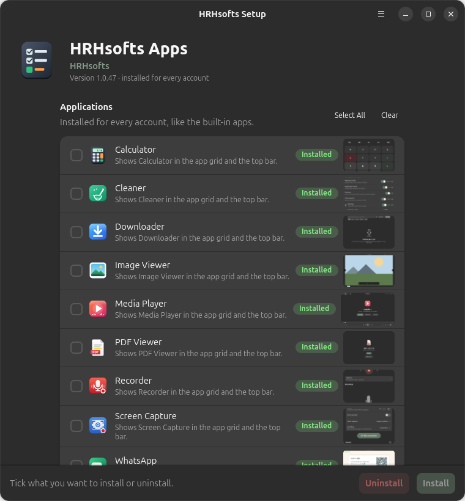
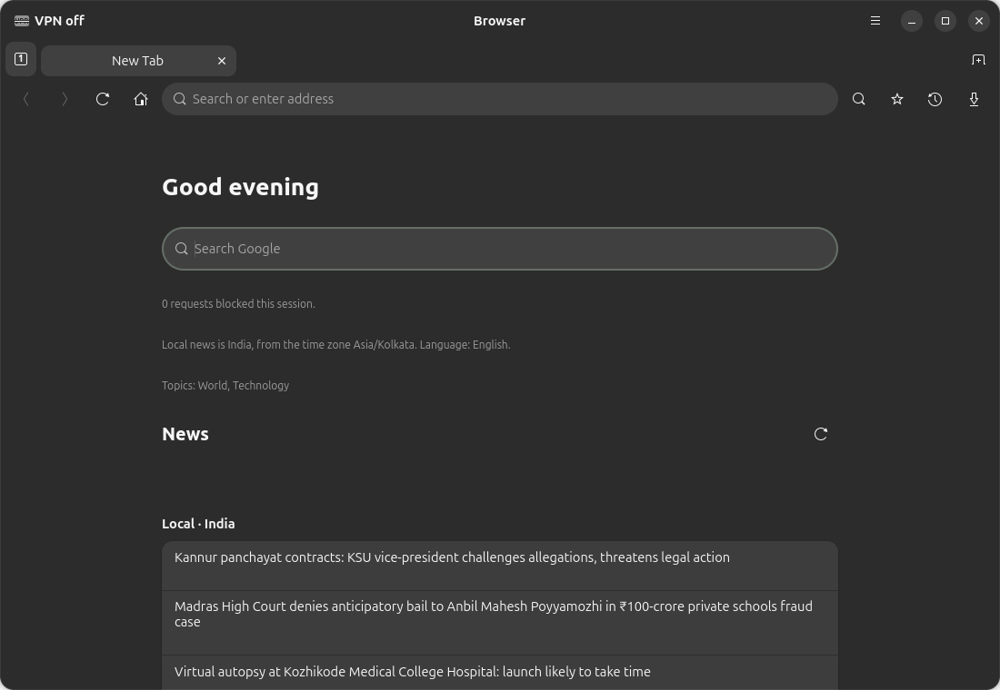
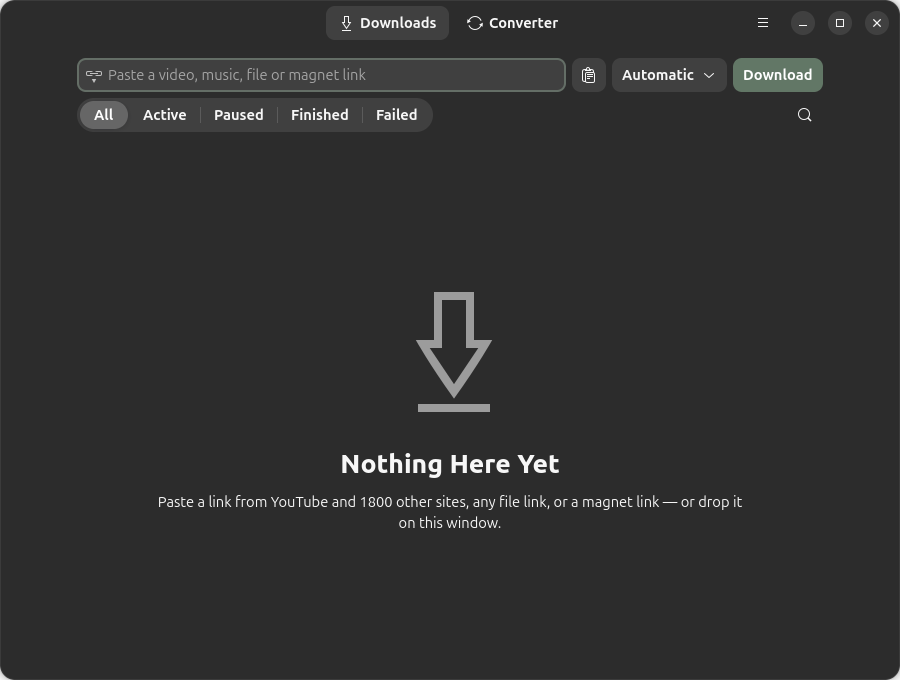
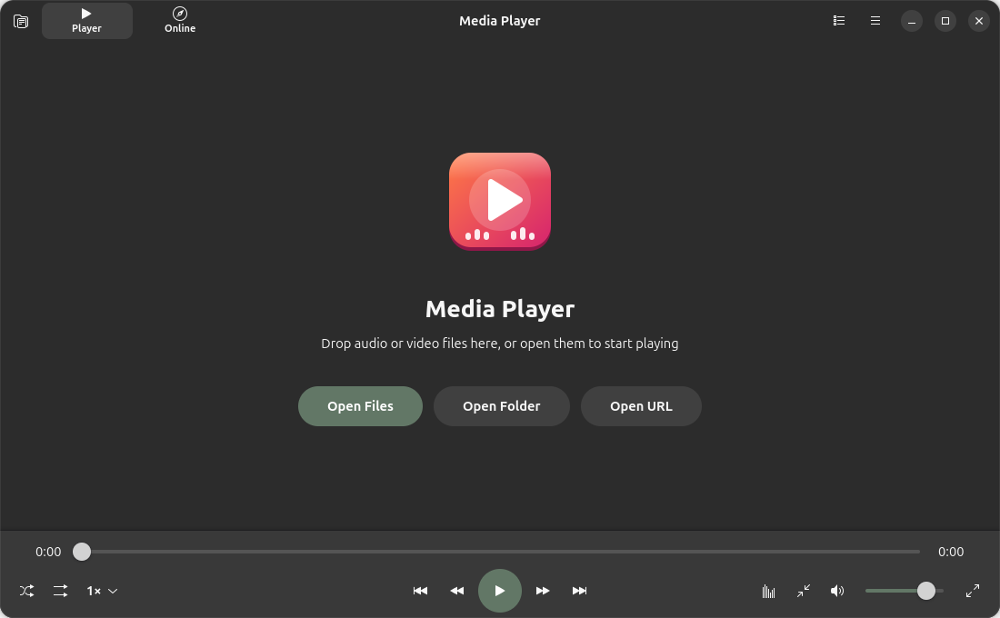
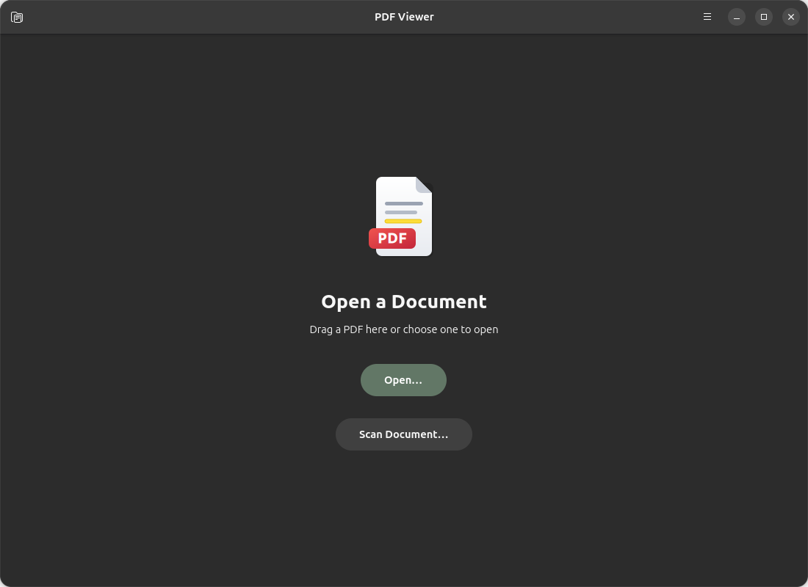
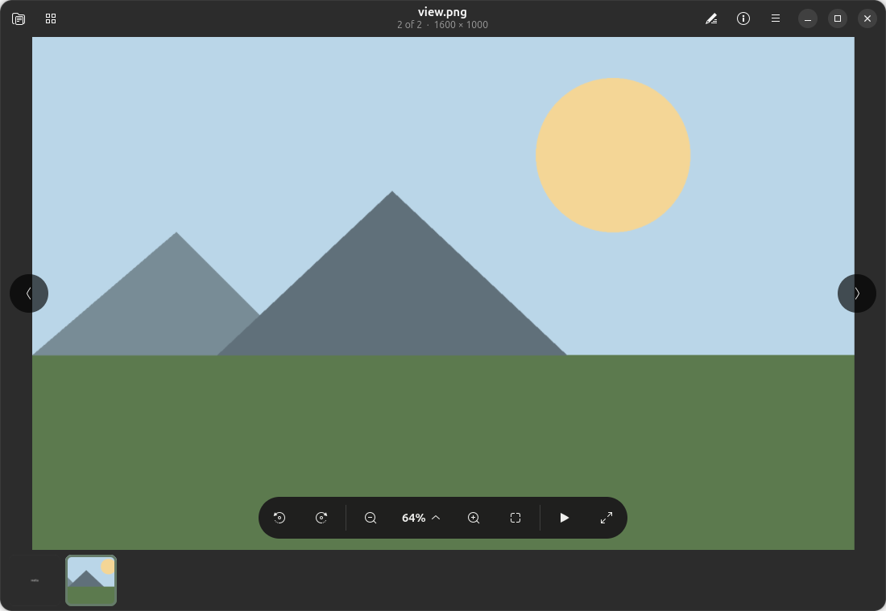
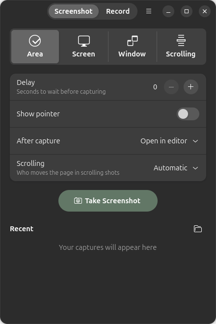
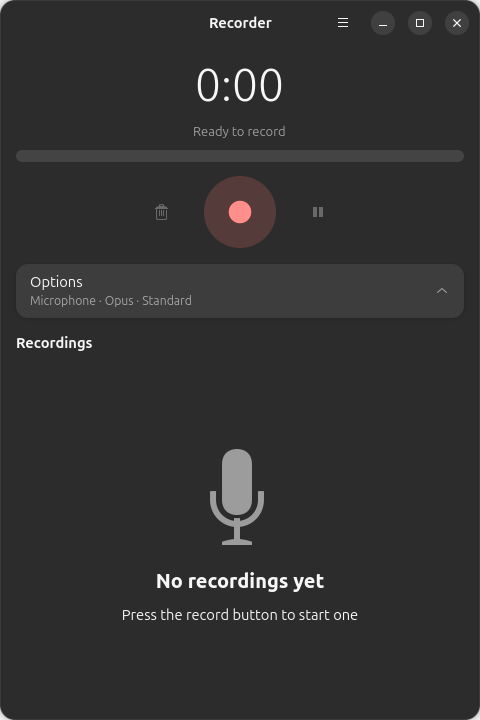
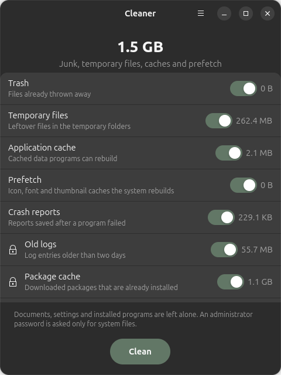
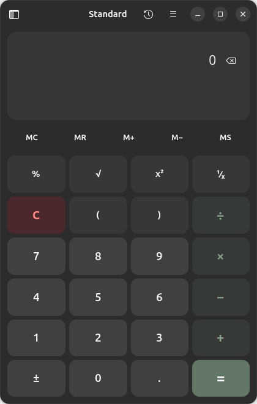
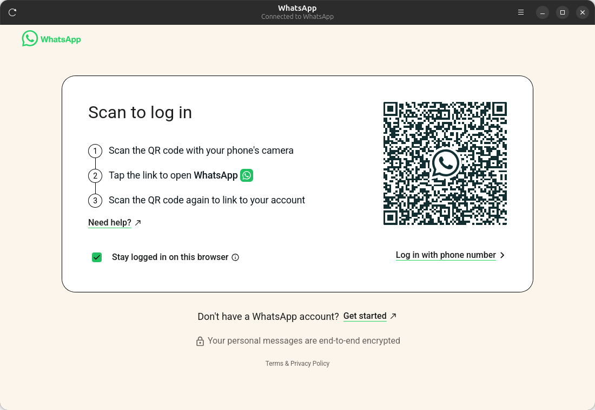
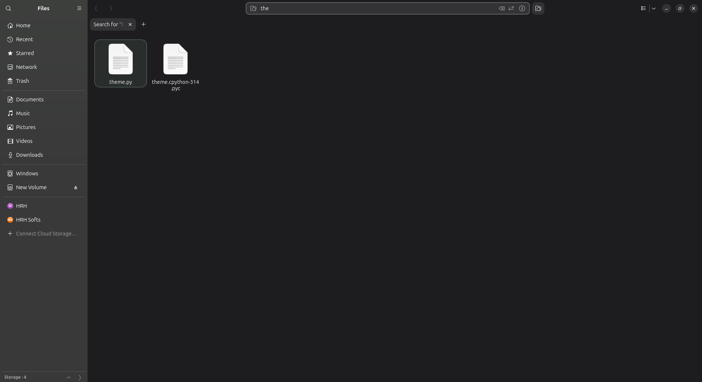